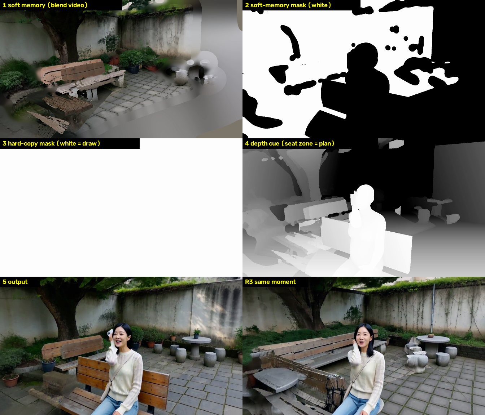
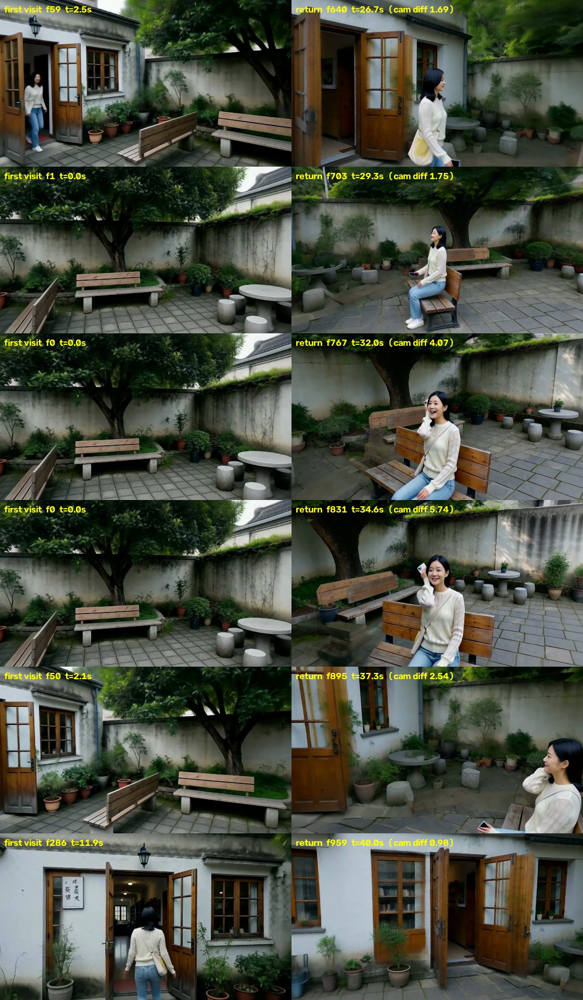
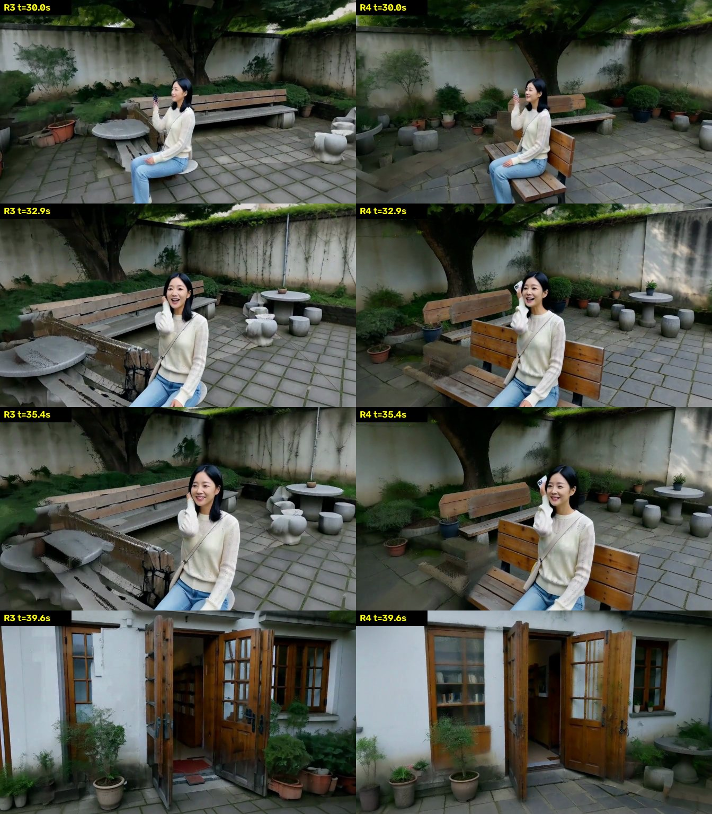

<!doctype html>
<html lang="zh">
<head>
<meta charset="utf-8">
<meta name="viewport" content="width=device-width, initial-scale=1">
<title>一镜到底项目概览</title>
<style>
:root{--bg:#111;--panel:#181a1d;--panel2:#1e2125;--line:#2b2f34;--text:#ddd;--muted:#9a9ea4;--accent:#8cf;--ok:#7c7;--warn:#e9b85a;--err:#e66}
*{box-sizing:border-box}
body{margin:0;background:var(--bg);color:var(--text);font:15px/1.65 -apple-system,BlinkMacSystemFont,"PingFang SC","Noto Sans SC","Microsoft YaHei",sans-serif}
.wrap{max-width:1180px;margin:0 auto;padding:22px 16px 60px}
h1{font-size:24px;margin:0 0 6px}h2{font-size:19px;margin:38px 0 12px;border-bottom:1px solid var(--line);padding-bottom:6px}
h3{font-size:16px;margin:18px 0 8px}
a{color:var(--accent)}
.muted{color:var(--muted)}.small{font-size:13px}
.nav{display:flex;flex-wrap:wrap;gap:8px;margin:10px 0 0}.nav a{background:var(--panel2);border:1px solid var(--line);border-radius:4px;padding:3px 10px;text-decoration:none;font-size:13px}
.box{background:var(--panel);border:1px solid var(--line);border-radius:8px;padding:14px 16px;margin:12px 0}
.status{border-left:4px solid var(--accent)}
.grid2{display:grid;grid-template-columns:repeat(auto-fit,minmax(320px,1fr));gap:14px}
.grid3{display:grid;grid-template-columns:repeat(auto-fit,minmax(260px,1fr));gap:12px}
figure{margin:0;background:var(--panel);border:1px solid var(--line);border-radius:8px;overflow:hidden}
figure img,figure video{width:100%;display:block;background:#000}
figcaption{padding:8px 10px;font-size:13px;color:var(--muted)}figcaption b{color:var(--text)}
.pair{display:grid;grid-template-columns:1fr 1fr}
table{border-collapse:collapse;width:100%;font-size:13.5px}th,td{border:1px solid var(--line);padding:6px 8px;text-align:left;vertical-align:top}th{background:var(--panel2);white-space:nowrap}
.tw{overflow-x:auto;margin:8px 0}
.tag{display:inline-block;border-radius:3px;padding:0 6px;font-size:12px;margin-right:4px;white-space:nowrap}
.t-ok{background:#1f3a24;color:#9e9}.t-mid{background:#3a3220;color:#ec8}.t-bad{background:#3d2022;color:#f99}.t-new{background:#1d3040;color:#9cf}
ol,ul{padding-left:22px}li{margin:3px 0}
svg text{font-family:inherit}
.big{font-size:22px;font-weight:600}
.kpi{display:grid;grid-template-columns:repeat(auto-fit,minmax(170px,1fr));gap:10px;margin:10px 0}
.kpi div{background:var(--panel2);border:1px solid var(--line);border-radius:6px;padding:8px 10px}
.kpi small{display:block;color:var(--muted);font-size:12px}
code{background:var(--panel2);border:1px solid var(--line);border-radius:3px;padding:0 4px;font-size:12.5px}
details summary{cursor:pointer;font-weight:600}pre{margin:10px 0 0}
</head>
<body>
<div class="wrap">
<h1>一镜到底：从一段剧本到分钟级、带对白的连续镜头</h1>
<div class="muted small">研究概览 · 更新于 2026-10-28 晚 · 本页只写当前方法（场景记忆 v4）和最新结果 R4 · 逐镜头白模和深度见 <a href="index.html">Story World 查看器</a></div>
<div class="nav"><a href="#task">任务</a><a href="#method">现在的方法</a><a href="#scene">场景记忆</a><a href="#person">人物记忆</a><a href="#result">最新结果 R4</a><a href="#problems">现在的问题</a><a href="#next">下一步</a></div>

<h2 id="task">任务</h2>
<div class="box">
<p style="margin:0 0 6px"><b>输入</b>：一段剧本，粗糙的也可以，由规划器补全。可选：参考动作视频、人物照片、参考声音。</p>
<p style="margin:0 0 6px"><b>输出</b>：分钟级、中间不剪辑的一条连续镜头，写实，带对白和环境声。相机可以穿门过廊，也能回到之前去过的地方。</p>
<p style="margin:0"><b>难点</b>：视频模型一次最多生成约 15 秒，只能分段生成再无缝接上；回到老地方时，场景、人、声音都要和之前一样；人不穿家具；动作要符合剧本或参考动作。</p>
</div>

<h2 id="method">现在的方法（一条流水线）</h2>
<div class="tw"><table>
<tr><th style="width:130px">步骤</th><th>做什么</th><th style="width:240px">产出</th></tr>
<tr><td><b>1 规划</b></td><td>LLM 把剧本写成场景布局（房间、门、家具）和剧情节拍，每个节拍有路线、动作、相机轨迹。校验器在白模里检查相机穿墙、近处遮挡、人被挡、人撞家具，不合格就退回重写。</td><td>scene.json、clips.json</td></tr>
<tr><td><b>2 按剧情切段</b></td><td>不再每 15 秒机械地切一刀。每一帧算一个“忙碌度”：相机移动和转动的速度、人开始走或停下、坐下或站起的前后各 1.5 秒、跳舞、说台词。在不超过 15 秒的前提下，把段与段的交接放在最闲的地方，所以每段长短不一。</td><td>每段的起止帧（plan_cuts.py）</td></tr>
<tr><td><b>3 白模 + 真人体 + 道具</b></td><td>Blender 沿相机轨迹渲染整条镜头。人物是贯穿全程的 SMPL-X 人体：走路按走过的距离摆腿，坐下有 1 秒过渡，看手机、打电话有手势，跳舞那段接动作捕捉。道具绑在手上，算人体的一部分（例如 16.2 秒拿起手机后，手机一直在右手里），所以深度图里有手机的形状。</td><td>每帧深度、骨架、人体轮廓、相机参数</td></tr>
<tr><td><b>4 动作参考</b>（搭档的方法）</td><td>参考视频和我们的镜头视角不同。先用 GVHMR 把原视频里的动作恢复成 3D，再从我们的机位渲染成灰模。然后让 H3 同时看原视频和灰模，按去噪步分工：前 2 步只看灰模（定视角和构图），中间 4 步两个都看，最后 2 步只看原视频（补动态和细节）。</td><td>我们机位下的 RGB 动作参考 &lt;Video 1&gt;</td></tr>
<tr><td><b>5 逐段生成</b></td><td>MiniMax-H3 参考版 + ControlNet-Union，8 步加速，4 张卡，每段约 10–15 分钟。输入：深度、场景记忆（硬抄部分 + 软记忆）、人物参考图、音色片段、动作参考、文字 prompt。</td><td>一段音视频</td></tr>
<tr><td><b>6 检查并记下来</b></td><td>人数和身份检查（拿人物记忆比对）、台词检查（whisper 识别）。通过后，这一段写进场景、人物、音色三个记忆。</td><td>三个记忆更新</td></tr>
<tr><td><b>7 拼接</b></td><td>后一段开头 10 帧整帧沿用前一段；拼接时在重叠区找两段最一致的那一帧，以它为中心做 9 帧加权过渡，声音交叉淡化。</td><td>整条成片</td></tr>
</table></div>

<h2 id="scene">场景记忆 v4：记什么、怎么用</h2>
<div class="grid2">
<div class="box" style="margin:0"><h3 style="margin-top:0">记什么（每段生成完）</h3><ul>
<li>取约 60 张关键帧，每张用 Depth Anything V2（NPU 上约 9 秒一段）估出每个像素有多远，按白模的尺寸对齐，变成<b>带颜色的 3D 点</b>。记的是模型<b>画出来</b>的样子，不是白模。原因是测下来 H3 只是大致跟着白模画（树、长椅、门的形状都和白模差很多），只认白模会丢掉大半记忆。</li>
<li>人和她背的包用 SAM3 抠掉，不记。</li>
<li>不可靠的不记：从几乎平行于表面的角度看到的像素（和表面法线夹角超过 75°）不存，这种角度估出的深度会被拉成条。</li>
</ul></div>
<div class="box" style="margin:0"><h3 style="margin-top:0">怎么用（下一段的每一帧）</h3><ol>
<li><b>找视角</b>：挑 12 张机位最接近的关键帧，把 3D 点投到当前镜头，得到“记忆画面”。下面这些都不用：看的方向和当时差 45° 以上的点、需要放大 1.8 倍以上的点、几张关键帧颜色对不上的像素、四周稀疏的零散点。</li>
<li><b>硬抄只给几乎同一个视角</b>：角度差 12° 以内、远近差不到 1.4 倍、并且连成 48 格（32×32 像素一格）以上的区域，才让模型照抄。</li>
<li><b>其余看过的地方用软记忆</b>：前 6 步去噪时，每一步之后把这些区域的潜变量拉回“加了相应噪声的记忆”；最后 2 步放开，让模型在整幅画面上重画细节。这样颜色和布局跟记忆走，方边被最后两步抹平，拉伸的纹理也会被重画干净。</li>
<li><b>人身边按白模</b>：人体轮廓外 150 像素内、且深度和人体相差不到 0.8 米的地方（她坐的长椅），深度用白模加人体，不抄也不软约束记忆。这样画出来的家具不会穿过她，也不会在她身下消失。</li>
<li><b>交接</b>：每段开头 10 帧整帧沿用上一段。</li>
</ol></div>
</div>
<figure style="margin-top:14px">
<figcaption><b>第 3 段某一帧送给模型的输入</b>：1 软记忆画面；2 软记忆的范围（白色）；3 硬抄范围，这一帧没有，全白表示全部交给模型画；4 深度，人身边那张长椅来自白模；5 R4 输出；右下是 R3 同一时刻，硬抄了从侧面看到的碎长椅，她身下临时冒出一个小圆凳。</figcaption></figure>
<p class="muted small">做法参考：CoDeR（通义，2609.26458）把生成的颜色按白模几何“贴回”白模，下一段以“贴了色的白模”作为软提示，不硬抄；他们为此训练了模型。我们不训练，所以用“前几步把潜变量拉向记忆、最后几步放开”来实现软约束，思路与 CamTrol、blended latent diffusion 这类不训练的方法一致。</p>

<h2 id="person">人物记忆：转一圈定妆 + 边拍边补</h2>
<div class="box"><ol>
<li><b>开拍前</b>：让 H3 生成角色原地转一圈的“定妆”视频（人体动作和相机都已知，所以每帧的朝向已知），放进 8 个视角格：前 / 左 / 后 / 右 × 全身 / 近景。</li>
<li><b>每段生成后</b>：按规划里人的位置，把画面里的人对上角色。SAM3 把人连包抠出来，按她相对相机的朝向和远近放进对应格子。DINOv2 检查她和库里同角度的样子像不像，不像的不进库。定妆照和第一张可靠的正脸永远不删。</li>
<li><b>下一段</b>：按相机轨迹算出她会以哪些角度出现，挑 2–3 张最匹配的拼成一张参考图给 H3（&lt;Picture 1&gt;）。</li>
</ol>
<p class="small muted" style="margin:6px 0 0"><b>音色记忆</b>：whisper 把生成的声音和台词对齐，截出每个角色的第一句，后面的段作为 &lt;Audio 1&gt; 给 H3。</p>
</div>

<h2 id="result">最新结果：后院 → 屋里 → 后院（R4，40 秒一镜到底）</h2>
<div class="box status"><p style="margin:0">小雨在后院跳一小段街舞（动作参考 aist_dance_1），回屋进工作间拿起手机看，再走回院子，坐到长椅上给妈妈打电话，镜头最后转回后门。按剧情切成 3 段：<b>第 1 段</b>院子和跳舞（0–15.1 秒），<b>第 2 段</b>屋里拿手机再走出后门（13.6–27.3 秒），<b>第 3 段</b>走到长椅、坐下、打电话、看回后门（25.7–40 秒）。坐下的动作和两句台词都完整落在同一段里。</p></div>
<div class="grid2">
<figure><video src="media/yard_return/take_r4.mp4" poster="media/yard_return/take_r4.jpg" controls playsinline preload="metadata"></video>
<figcaption><b>成片 R4</b>：3 段接成一条，带对白和环境声。</figcaption></figure>
<figure>
<figcaption><b>第一次来（左）和回来后（右）</b>：对后半段的每一帧，在第 1 段里找机位最接近的一帧。大树、院墙、树前长椅、石桌、盆栽、后门对得上。差别：石凳从 3 个变成 5–6 个；最后看后门时，门上的壁灯和左窗的字幅没了。</figcaption></figure>
</div>
<div class="grid2" style="margin-top:14px">
<figure>
<figcaption><b>R3（左）和 R4（右）同一时刻</b>：R3 硬抄了换角度后的错误记忆，左边是一张散架的长椅，她坐在临时冒出的小圆凳上，每次镜头一转位置就变；R4 里她坐在一张完整的长椅上，手机在耳边，没有方块。</figcaption></figure>
<div class="box" style="margin:0"><h3 style="margin-top:0">做到了 / 没做到</h3><ul>
<li><span class="tag t-ok">做到</span>回到院子后，大树、院墙、长椅、石桌、后门和第一次来一致；没有方块拼接和散架物体。</li>
<li><span class="tag t-ok">做到</span>她坐在同一张长椅上，位置不跳；手机从工作间拿起后一直在手里，打电话时在耳边。</li>
<li><span class="tag t-ok">做到</span>人前后一致；两句台词都说出来了；跳舞跟着参考动作。</li>
<li><span class="tag t-bad">没做到</span>长椅靠背被画在她身前，像反着坐。</li>
<li><span class="tag t-bad">没做到</span>小细节会变：石凳多了几个，后门上的壁灯和字幅没了。</li>
</ul></div>
</div>

<h2 id="problems">现在的问题</h2>
<ul>
<li><b>靠背画在身前</b>：深度图里靠背在她身后（比身体远），但被身体挡住中间、两边露出来的样子，模型读成了身前的一块板。prompt 写了“背靠椅背”也没用。可以试：让她坐在长椅正中，或者在人身边额外给骨架图。</li>
<li><b>硬抄太少，细节保不住</b>：第 3 段中段以后硬抄比例是 0，全靠软记忆。大的样子保住了，小东西（壁灯、字幅、石凳个数）会被重画。回到几乎同一个机位时，应该放宽硬抄条件，比如角度差 20° 以内。</li>
<li><b>模型多画东西</b>：prompt 已改成只有“一张短长椅”，第 1 段还是在树前多画了一张靠墙长椅。现在的记忆会把它一直保留下来，所以前后一致，但和白模不一致。</li>
<li><b>脸</b>：全身镜头里脸只有几十个像素，转头会糊。人物记忆里的图也多是全身，帮不上脸。</li>
<li><b>速度</b>：每段在 Mac 上渲染记忆要 10–15 分钟，生成每段 10–15 分钟。</li>
</ul>

<h2 id="next">下一步</h2>
<ol>
<li><b>回到原机位时多硬抄</b>：近视角条件放宽到约 20°，并按“这一帧和哪一张旧帧几乎同机位”整片保留，专门保住回看后门这类镜头的细节。</li>
<li><b>修靠背</b>：人坐在长椅正中；在人身边的小范围里额外给骨架图。</li>
<li><b>把画出来的家具写回白模</b>：用 SAM3 加深度找出模型多画的家具，补进白模，之后的深度和人怎么走都跟着它。</li>
<li><b>人物记忆加脸</b>：定妆时加一圈脸部近景；说话时用近景镜头，必要时做人脸修复。</li>
<li><b>提速</b>：记忆渲染搬到服务器上，用 GPU/NPU 投点。</li>
</ol>
</div>
</body>
</html>
